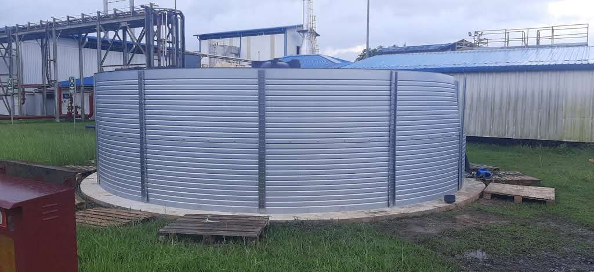

🏆 Rainwater Harvesting & Treatment Plant
Project Objective:
Reduce dependence on municipal water sources by harvesting, treating, and utilizing rainwater for factory operations while supporting sustainability goals.
Description
Led the implementation of a rainwater harvesting and treatment system to improve water sustainability and reduce operational costs. The project involved rainwater collection, storage, treatment, and integration into factory water consumption, providing a reliable alternative water source for manufacturing operations.
Project Photos


Key Actions
- Designed and implemented a rainwater harvesting system.
- Installed treatment facilities to achieve required water quality standards.
- Integrated treated rainwater into factory operations.
- Optimized storage and distribution systems.
- Monitored water quality and consumption performance.
Key Results
- ✅ Achieved 25% of factory water demand through harvested rainwater.
- ✅ Reduced dependence on external water sources.
- ✅ Improved factory sustainability performance.
- ✅ Reduced operating costs associated with water consumption.
- ✅ Supported environmental and resource conservation initiatives.
Skills Demonstrated
Sustainability Engineering • Water Treatment • Utilities Management • Project Management • CAPEX Execution • Operational Excellence
← Back to Portfolio